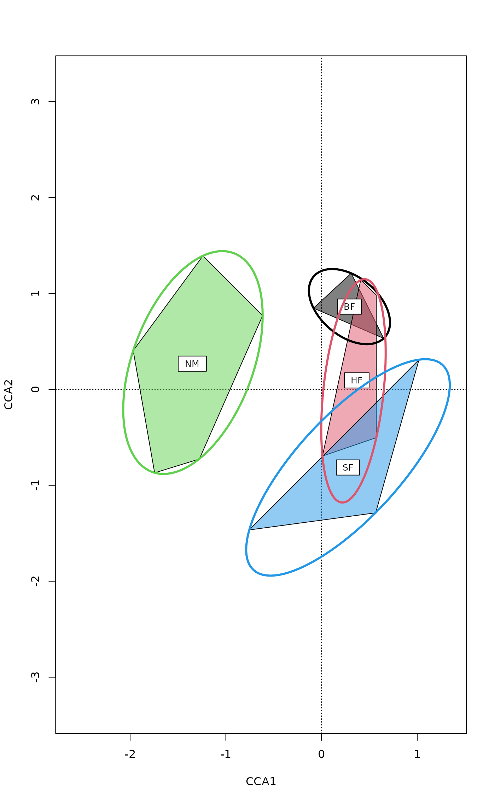

Display Groups or Factor Levels in Ordination Diagrams
ordihull.RdFunctions to add convex hulls, “spider” graphs, ellipses
or cluster dendrogram to ordination diagrams. The ordination
diagrams can be produced by vegan plot.cca,
plot.decorana or ordiplot.
Usage
ordihull(ord, groups, display = "sites", draw = c("lines","polygon", "none"),
col = NULL, alpha = 127, show.groups, label = FALSE,
border = NULL, lty = NULL, lwd = NULL, ...)
ordiellipse(ord, groups, display="sites", kind = c("sd","se", "ehull"),
conf, draw = c("lines","polygon", "none"),
w = weights(ord, display), col = NULL, alpha = 127, show.groups,
label = FALSE, border = NULL, lty = NULL, lwd=NULL, ...)
ordibar(ord, groups, display = "sites", kind = c("sd", "se"), conf,
w = weights(ord, display), col = 1, show.groups, label = FALSE,
lwd = NULL, length = 0, ...)
ordispider(ord, groups, display="sites", w = weights(ord, display),
spiders = c("centroid", "median"), show.groups,
label = FALSE, col = NULL, lty = NULL, lwd = NULL, ...)
ordicluster(ord, cluster, prune = 0, display = "sites",
w = weights(ord, display), col = 1, draw = c("segments", "none"),
...)
# S3 method for class 'ordihull'
summary(object, ...)
# S3 method for class 'ordiellipse'
summary(object, ...)
ordiareatest(ord, groups, area = c("hull", "ellipse"), kind = "sd",
permutations = 999, parallel = getOption("mc.cores"), ...)Arguments
- ord
An ordination object or an
ordiplotobject.- groups
Factor giving the groups for which the graphical item is drawn.
- display
Item to displayed.
- draw
character; how should objects be represented on the plot? For
ordihullandordiellipseuse eitherlinesorpolygonto draw the lines. Forordicluster, line segments are drawn usingsegments. To suppress plotting, use"none". Graphical parameters are passed to both. The main difference is thatpolygons may be filled and non-transparent. Withnonenothing is drawn, but the function returns theinvisibleplotting.- col
Colour of hull or ellipse lines (if
draw = "lines") or their fills (ifdraw = "polygon") inordihullandordiellipse. Whendraw = "polygon", the colour of bordering lines can be set with argumentborderof thepolygonfunction. For other functions the effect depends on the underlining functions this argument is passed to. When multiple values ofcolare specified these are used for each element ofnames(table(groups))(in that order), shorter vectors are recycled. Functionordiclusterhas nogroups, and there the argument will be recycled for points, and the colour of connecting lines is a mixture of point s in the cluster.- alpha
Transparency of the fill
colour withdraw = "polygon"inordihullandordiellipse. The argument takes precedence over possible transparency definitions of the colour. The value must be in range \(0...255\), and low values are more transparent. Transparency is not available in all graphics devices or file formats.- show.groups
Show only given groups. This can be a vector, or
TRUEif you want to show items for which condition isTRUE. This argument makes it possible to use different colours and line types for groups. The default is to show all groups.- label
Label the
groupsby their names in the centroid of the object.ordiellipseandordihulluse standardtext, and others useordilabel.- w
Weights used to find the average within group. Weights are used automatically for
ccaanddecoranaresults, unless undone by the user.w=NULLsets equal weights to all points.- kind
Draw standard deviations of points (
sd), standard errors (se) or ellipsoid hulls that enclose all points in the group (ehull).- conf
Confidence limit for ellipses, e.g. 0.95. If given, the corresponding
sdorseis multiplied with the corresponding value found from the Chi-squared distribution with 2df.- spiders
Are centres or spider bodies calculated either as centroids (averages) or spatial medians.
- cluster
Result of hierarchic cluster analysis, such as
hclustoragnes.- prune
Number of upper level hierarchies removed from the dendrogram. If
prune\(>0\), dendrogram will be disconnected.- object
A result object from
ordihullorordiellipse. The result isinvisible, but it can be saved, and used for summaries (areas etc. of hulls and ellipses).- area
Evaluate the area of convex hulls of
ordihull, or of ellipses ofordiellipse.- permutations
a list of control values for the permutations as returned by the function
how, or the number of permutations required, or a permutation matrix where each row gives the permuted indices.- parallel
Number of parallel processes or a predefined socket cluster. With
parallel = 1uses ordinary, non-parallel processing. The parallel processing is done with parallel package.- lty, lwd, border
Vectors of these parameters can be supplied and will be applied (if appropriate) for each element of
names(table(groups))(in that order). Shorter vectors will be recycled.- length
Width (in inches) of the small (“caps”) at the ends of the bar segment (passed to
arrows).- ...
Parameters passed to graphical functions or to
scoresto select axes and scaling etc.
Details
Function ordihull draws lines or
polygons for the convex
hulls found by function chull encircling
the items in the groups.
Function ordiellipse draws lines or
polygons for ellipses by groups. The function
can either draw standard deviation of points (kind="sd") or
standard error of the (weighted) centroids (kind="se"), and
the (weighted) correlation defines the direction of the principal
axis of the ellipse. When kind = "se" is used together with
argument conf, the ellipses will show the confidence regions
for the locations of group centroids. With kind="ehull" the
function draws an ellipse that encloses all points of a group using
ellipsoidhull (cluster package).
Function ordibar draws crossed “error bars” using
either either standard deviation of point scores or standard error
of the (weighted) average of scores. These are the principal axes of
the corresponding ordiellipse, and are found by principal
component analysis of the (weighted) covariance matrix.
Functions ordihull and ordiellipse return invisibly an
object that has a summary method that returns the coordinates
of centroids and areas of the hulls or ellipses. Function
ordiareatest studies the one-sided hypothesis that these
areas are smaller than with randomized groups. Argument
kind can be used to select the kind of ellipse, and has no
effect with convex hulls.
Function ordispider draws a ‘spider’ diagram where
each point is connected to the group centroid with
segments. Weighted centroids are used in the
correspondence analysis methods cca and
decorana or if the user gives the weights in the
call. If ordispider is called with cca or
rda result without groups argument, the
function connects each ‘WA’ scores to the corresponding
‘LC’ score. If the argument is a (invisible)
ordihull object, the function will connect the points of the
hull to their centroid.
Function ordicluster overlays a cluster dendrogram onto
ordination. It needs the result from a hierarchic clustering such as
hclust or agnes, or other with
a similar structure. Function ordicluster connects cluster
centroids to each other with line segments. Function
uses centroids of all points in the clusters, and is therefore
similar to average linkage methods.
Note
These functions add graphical items to ordination graph: You
must draw a graph first. To draw line segments, grids or arrows, see
ordisegments, ordigrid
andordiarrows.
Value
Functions ordihull, ordiellipse and ordispider
return the invisible plotting structure.
Function ordispider return the coordinates to which each
point is connected (centroids or ‘LC’ scores).
Function ordihull and ordiellipse return invisibly an
object that has a summary method that returns the coordinates
of centroids and areas of the hulls or ellipses. Function
ordiareatest studies the one-sided hypothesis that these
areas are smaller than with randomized groups.
See also
The functions pass parameters to basic graphical functions,
and you may wish to change the default values in
lines, segments and
polygon. You can pass parameters to
scores as well. Underlying functions for
ordihull is chull. The underlying function for
ellipsoid hulls in ordiellipse is
ellipsoidhull.
Examples
data(dune)
data(dune.env)
mod <- cca(dune ~ Management, dune.env)
plot(mod, type="n", scaling = "symmetric")
## Catch the invisible result of ordihull...
pl <- with(dune.env, ordihull(mod, Management,
scaling = "symmetric", label = TRUE))
## ... and find centres and areas of the hulls
summary(pl)
#> BF HF NM SF
#> CCA1 0.2917476 0.36826105 -1.3505642 0.2762936
#> CCA2 0.8632208 0.09419919 0.2681515 -0.8139398
#> Area 0.1951715 0.59943363 1.7398193 1.0144372
## use more colours and add ellipsoid hulls
plot(mod, type = "n")
pl <- with(dune.env, ordihull(mod, Management,
scaling = "symmetric", col = 1:4,
draw="polygon", label =TRUE))
with(dune.env, ordiellipse(mod, Management, scaling = "symmetric",
kind = "ehull", col = 1:4, lwd=3))

## ordispider to connect WA and LC scores
plot(mod, dis=c("wa","lc"), type="p")
ordispider(mod)
 ## Other types of plots
plot(mod, type = "p", display="sites")
cl <- hclust(vegdist(dune))
ordicluster(mod, cl, prune=3, col = cutree(cl, 4))
## Other types of plots
plot(mod, type = "p", display="sites")
cl <- hclust(vegdist(dune))
ordicluster(mod, cl, prune=3, col = cutree(cl, 4))
 ## confidence ellipse: location of the class centroids
plot(mod, type="n", display = "sites")
with(dune.env, text(mod, display="sites", labels = as.character(Management),
col=as.numeric(Management)))
pl <- with(dune.env, ordiellipse(mod, Management, kind="se", conf=0.95, lwd=2,
draw = "polygon", col=1:4, border=1:4,
alpha=63))
summary(pl)
#> BF HF NM SF
#> CCA1 0.4312652 0.5583211 -1.87848340 0.5601499
#> CCA2 1.3273917 0.6373120 -0.05503211 -1.3859924
#> Area 1.4559842 1.3806668 2.73667419 1.5559135
## add confidence bars
with(dune.env, ordibar(mod, Management, kind="se", conf=0.95, lwd=2, col=1:4,
label=TRUE))
## confidence ellipse: location of the class centroids
plot(mod, type="n", display = "sites")
with(dune.env, text(mod, display="sites", labels = as.character(Management),
col=as.numeric(Management)))
pl <- with(dune.env, ordiellipse(mod, Management, kind="se", conf=0.95, lwd=2,
draw = "polygon", col=1:4, border=1:4,
alpha=63))
summary(pl)
#> BF HF NM SF
#> CCA1 0.4312652 0.5583211 -1.87848340 0.5601499
#> CCA2 1.3273917 0.6373120 -0.05503211 -1.3859924
#> Area 1.4559842 1.3806668 2.73667419 1.5559135
## add confidence bars
with(dune.env, ordibar(mod, Management, kind="se", conf=0.95, lwd=2, col=1:4,
label=TRUE))